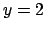

Next: 5.21.8 boxwidth Up: 5.21 set Previous: 5.21.6 bar Contents Index
set boxfrom <value>
The `boxfrom' setting alters PyXPlot's behaviour when plotting bar charts.
It changes the horizontal line (vertical point;  -axis value) from which the
boxes of bar charts appear to emanate. The default value is zero (i.e. boxes
extend from the line of the
-axis value) from which the
boxes of bar charts appear to emanate. The default value is zero (i.e. boxes
extend from the line of the  -axis). An example of its syntax would be:
-axis). An example of its syntax would be:
set boxfrom 2
which would make the boxes of a barchart emanate vertically from the line .